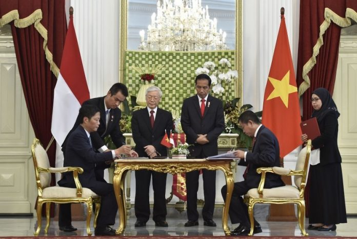
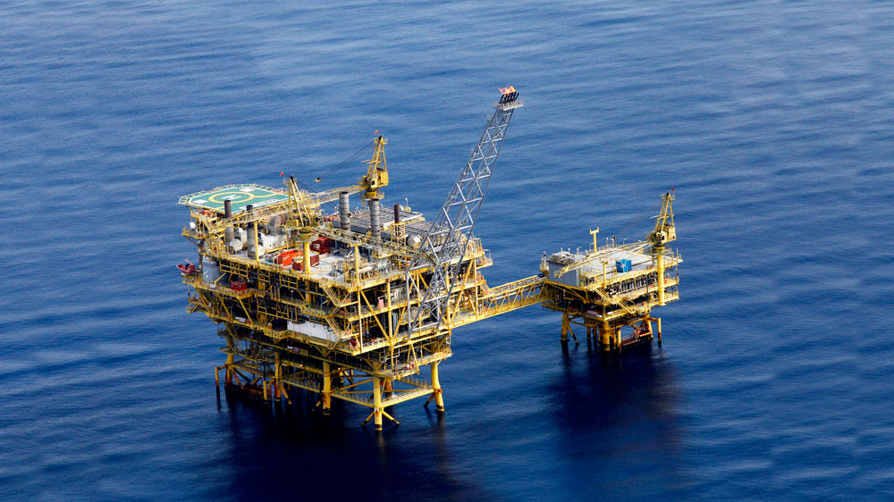
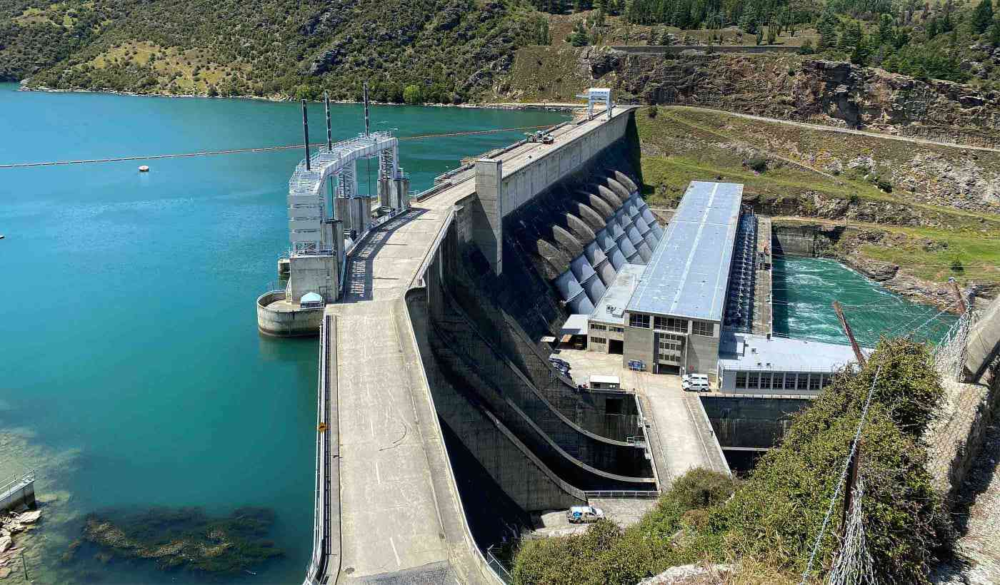
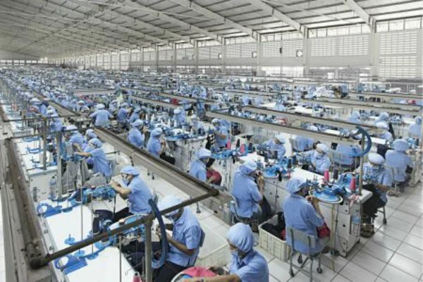

Indonesia dan Vietnam kerjasama dalam bidang energi dan sumber daya mineral yang ditandai dengan
penandatanganan MoU untuk kerjasama antara Kementerian Perindustrian dan Perdagangan Vietnam. Kerjasama ini
mencakup beberapa sektor, khususnya pemanfaatan gas alam dan pengembangan energi di wilayah perbatasan kedua
negara. Indonesia dan vietnam saling memanfaat gas di wilayah perbatasan kontinen.
🎀Pemanfaatan Gas di Wilayah Kontinen
Studi Bersama Perkembangan Infrastruktur Gas.
Indonesia dan Vietnam melakukan studi untuk mengoptimalkan pemanfaatan sumber daya gas alam di kawasan
tersebut.
Pengawasan Perusahaan
Mengawasi perusahaan-perusahaan yang terlibat dalam pemanfaatan gas di wilayah perbatasan kontinen agar
sesuai
dengan prinsip.
🎀Eksplorasi dan Eksploitasi Migas di Natuna. Kerjasama ini melibatkan penyediaan teknis
migas, yang
berpotensi untuk meningkatkan efisiensi pengelolaan sumber daya migas.
🎀Pengembangan Energi Terbarukan.
Pembangunan Pembangkit Listrik Tenaga Surya untuk mempercepat transisi energi di kawasan.
Hidroelektrik. Mengembangkan pembangkit listrik tenaga air untuk mendukung kebutuhan listrik ramah
lingkungan.
Kerjasama dalam bidang ini sangat berkaitan dengan tujuan ke-8 SDGs/TPB dengan alasan :
1. Mendukung Pertumbuhan Ekonomi yang Berkelanjutan
⭐Eksplorasi dan pemanfaatan gas menciptakan peluang untuk meningkatkan sektor energi
terhadap pertumbuhan ekonomi. Semakin berkembang sektor tersebut ekonomi kedua negara akan semakin meningkat
yang sesuai dengan target tujuan ke-8 SDGs/TPB yaitu mempertahankan pertumbuhan ekonomi per kapita. Dengan
infrastruktur yang baik, sektor ini dapat mendukung ekonomi yang berkesinambungan.
⭐Proyek energi terbarukan membuka peluang untuk investasi berkelanjutan, sekaligus
mempromosikan efisiensi energi terbarukan.
2. Menciptakan Lapangan Kerja Produktif
⭐Proyek eksplorasi memberikan dampak langsung terhadap penyediaan lapangan kerja di
sektor energi dan teknik. Kerjasama ini mendorong terciptanya pekerjaan yang produktif di tingkat lokal,
mulai dari tenaga kerja lapangan, ahli teknik, hingga profesional. Pengawasan terhadap perusahaan yang
terlibat juga sesuai dengan target tujuan ke-8 SGs/TPB yaitu ‘kondisi kerja yang layak dan adil’.